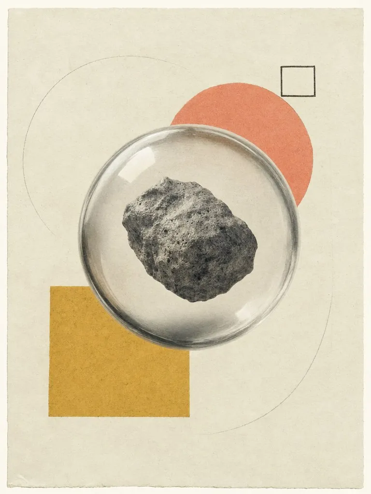

趋势
Nº 0122026.03.08
均线缠绕时，最好的仓位是零
周线三线纠缠、斜率走平，方向尚未选择。此时开仓，本质上是在为无聊付费。
阅读全文Edboy 是一份关于商品期货的长期笔记。核心问题只有一个：趋势方向。周线定势、日线验证、小时执行；当三段时间讲不出一致的故事，就空仓等待。这里记录方法，也记录那些当时看似正确、事后必须承认错误的判断。
读写作原则所有文章都围绕同一件事：在不确定里，把判断拆成可以复查的步骤。
周线三线纠缠、斜率走平，方向尚未选择。此时开仓，本质上是在为无聊付费。
阅读全文
一次失败的突破，让我重新计算了“看对”与“活下来”之间的汇率。
阅读全文当盘面还在震荡，钢厂与社会库存已经连续三周给出同一个方向。
阅读全文不是每一次回落都叫失败。有时它只是把不坚定的仓位请下车。
阅读全文方向对了，节奏错了。复盘最难的部分，是承认两者可以同时成立。
阅读全文方向、强度、位置，最后才是仓位。顺序颠倒，判断就会变成借口。
周线先回答“有没有趋势”。看斜率与均线排列；斜率走平、三线缠绕，就标记为无趋势，不开仓。
日线回答“趋势够不够强”。强度不足时，周线方向只是背景，不是入场许可。
小时图回答“在哪里做”。等回踩与同向信号；止损放在结构失效处，而不是心理舒服处。
收盘后回答“哪一步判断错了”。方向、节奏、执行分开记；亏得明白，才算成本。
这份手记不提供信号，也不预测点位。它只做一件事：把判断过程写下来，让下一次的自己在同样的位置，少犯一次同样的错。
五个反复出现的关键词，构成了这份手记的骨架。
PLATE Nº 12 · 纸艺拼贴 · EDBOY